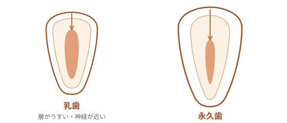

嫌がったら、やめます。
お子さまのむし歯予防と治療を行います。年齢の制限はありません——歯が生える前の赤ちゃんから、何歳でもお気軽にどうぞ。歯医者を嫌いにならないことを、何より大切にします。怖がるお子さまに無理やり治療することはしません。診療台に座ってみる、器具にさわってみる——そんな「慣れる」ところから、その子その日の様子に合わせて進めます。（仮）
こんなときはご相談ください（仮）
- 仕上げみがきで黒い点・白いにごりを見つけた
- 学校・園の検診で指摘を受けた
- 歯医者を怖がって、連れて行けずにいる
- 指しゃぶり・歯ならび・かみ合わせが気になる
- 甘いものをよく食べる・だらだら食べが続いている
- そろそろフッ素やシーラントで予防を始めたい
乳歯のむし歯は、ここが違う
乳歯は、大人の歯（永久歯）にくらべてエナメル質や象牙質の層がうすく、いったんむし歯になると内側へ進みやすい性質があります。神経までの距離も近いため、見た目が小さくても中で広がっていることがあります。痛みが出にくいまま進むこともあり、気づいたときには思ったより深い——ということも少なくありません。
「乳歯はどうせ抜けるから」と思われがちですが、乳歯はかむ・発音する・あごの成長をうながすほか、あとから生えてくる永久歯の場所を取っておく案内役でもあります。乳歯のむし歯を早めにケアしておくことは、永久歯のためにも意味があります。

むし歯を、防ぐ
子どものむし歯予防は、いくつかの方法を組み合わせて進めます。歯みがき（仕上げみがき）だけにたよらず、フッ化物・歯の形・食べ方の3つから、その子に合うものを一緒に選んでいきます。
当院の進め方
慣れることから、はじめます。
怖がるお子さまを、押さえつけて治療することはしません。まずは診療台に座ってみる、お口を開けてみる、使う器具を見て・さわって・音を聞いてみる——その子のペースで「歯医者って大丈夫そう」と思えるところから始めます。嫌がるときはいったん止めて、別の日に切りかえることもあります。急ぎの痛みがあるときは、必要な処置を見きわめて、無理のない範囲で進めます。（仮）
よくあるご質問
- 何歳から通えますか？
- 年齢の制限はありません。歯が生える前の赤ちゃんから通っていただけます。まだ治療が難しい年齢でも、慣れる練習や保護者の方へのアドバイスからお手伝いできます。（仮）
- 乳歯のむし歯も、治療したほうがいいですか？
- 乳歯はかむ・発音する・永久歯の生える場所を保つといった役割があります。乳歯のむし歯を放っておくと、あとから生える永久歯にも影響することがあります。状態を見て、その子に合った進め方をご相談します。（仮）
- うちの子は歯医者を怖がります。それでも大丈夫ですか？
- 大丈夫です。怖がるお子さまに無理やり治療することはしません。座ってみる・さわってみる、といった「慣れる」ところから、その子のペースで進めます。嫌がるときはいったん止めることもあります。（仮）
出典: e-ヘルスネット（厚生労働省）／日本口腔衛生学会ほか4学会「フッ化物配合歯磨剤の推奨される利用方法について」（2023）／日本小児歯科学会 ほか。本ページの医学的な記述・図は一般的な情報であり、実際の診断・治療方針は診察のうえ個別にご説明します。